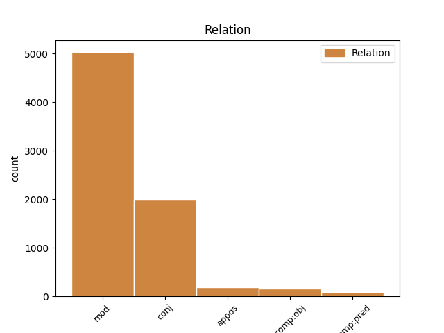
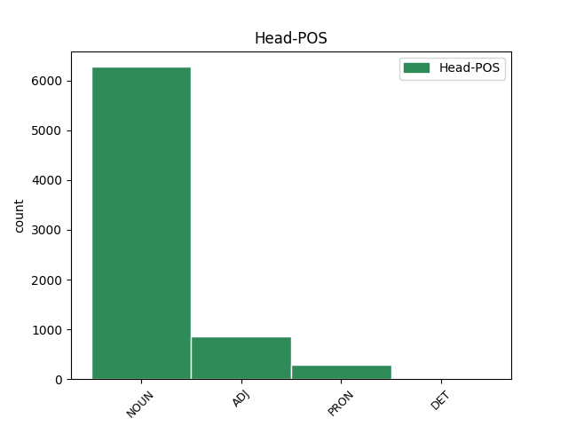
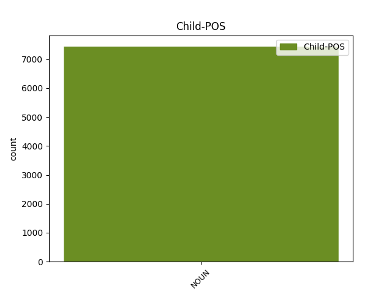

Distribution of features within this leaf



Agreement Rules sorted by frequency.
- When the dependent token is the modifer(mod) of the head token, and the head token is NOUN and the dependent token is NOUN.
1 εἰ _ _ _ _ 0 _ _ _
2 δ̓ _ _ _ _ 0 _ _ _
3 αὖθ̓ _ _ _ _ 0 _ _ _
4 ὁμαίμοις _ _ _ _ 0 _ _ _
5 παισὶν παῖς NOUN n-p---md- Case=Dat|Gender=Masc|Number=Plur 0 _ _ _
6 Αἰγύπτου Αἴγυπτος NOUN n-s---mg- Case=Gen|Gender=Masc|Number=Sing 5 mod _ _
7 σέθεν _ _ _ _ 0 _ _ _
8 σταθεὶς _ _ _ _ 0 _ _ _
9 πρὸ _ _ _ _ 0 _ _ _
10 τειχέων _ _ _ _ 0 _ _ _
11 διὰ _ _ _ _ 0 _ _ _
12 μάχης _ _ _ _ 0 _ _ _
13 ἥξω _ _ _ _ 0 _ _ _
14 τέλους _ _ _ _ 0 _ _ _
15 , _ _ _ _ 0 _ _ _
16 πῶς _ _ _ _ 0 _ _ _
17 οὐχὶ _ _ _ _ 0 _ _ _
18 τἀνάλωμα _ _ _ _ 0 _ _ _
19 γίγνεται _ _ _ _ 0 _ _ _
20 πικρόν _ _ _ _ 0 _ _ _
21 , _ _ _ _ 0 _ _ _
22 ἄνδρας _ _ _ _ 0 _ _ _
23 γυναικῶν _ _ _ _ 0 _ _ _
24 οὕνεχ̓ _ _ _ _ 0 _ _ _
25 αἱμάξαι _ _ _ _ 0 _ _ _
26 πέδον _ _ _ _ 0 _ _ _
27 ; _ _ _ _ 0 _ _ _
1 μή _ _ _ _ 0 _ _ _
2 τι _ _ _ _ 0 _ _ _
3 τλῇς _ _ _ _ 0 _ _ _
4 τὰν _ _ _ _ 0 _ _ _
5 ἱκέτιν ἱκέτις NOUN n-s---fa- Case=Acc|Gender=Fem|Number=Sing 0 _ _ _
6 εἰσιδεῖν _ _ _ _ 0 _ _ _
7 ἀπὸ _ _ _ _ 0 _ _ _
8 βρετέων _ _ _ _ 0 _ _ _
9 βίᾳ _ _ _ _ 0 _ _ _
10 δίκας _ _ _ _ 0 _ _ _
11 ἀγομέναν _ _ _ _ 0 _ _ _
12 ἱππηδὸν _ _ _ _ 0 _ _ _
13 ἀμπύκων _ _ _ _ 0 _ _ _
14 , _ _ _ _ 0 _ _ _
15 πολυμίτων _ _ _ _ 0 _ _ _
16 πέπλων _ _ _ _ 0 _ _ _
17 τ̓ _ _ _ _ 0 _ _ _
18 ἐπιλαβὰς ἐπιλαβή NOUN n-p---fa- Case=Acc|Gender=Fem|Number=Plur 5 conj _ _
19 ἐμῶν _ _ _ _ 0 _ _ _
20 . _ _ _ _ 0 _ _ _
1 καὶ _ _ _ _ 0 _ _ _
2 ξυμβολοῦσιν _ _ _ _ 0 _ _ _
3 οὐ _ _ _ _ 0 _ _ _
4 πολυστομεῖν _ _ _ _ 0 _ _ _
5 χρεὼν _ _ _ _ 0 _ _ _
6 ναύτην _ _ _ _ 0 _ _ _
7 ἄγοντας _ _ _ _ 0 _ _ _
8 τόνδ̓ _ _ _ _ 0 _ _ _
9 ἐφέστιον ἐφέστιος ADJ a-s---ma- Case=Acc|Gender=Masc|Number=Sing 0 _ _ _
10 θεῶν θεός NOUN n-p---mg- Case=Gen|Gender=Masc|Number=Plur 9 mod _ SpaceAfter=No
11 . _ _ _ _ 0 _ _ _
1 τίν̓ τίς PRON p-s---ma- Case=Acc|Gender=Masc|Number=Sing 0 _ _ _
2 οὖν _ _ _ _ 0 _ _ _
3 κικλῄσκω _ _ _ _ 0 _ _ _
4 τῶνδε _ _ _ _ 0 _ _ _
5 δαιμόνων δαίμων NOUN n-p---mg- Case=Gen|Gender=Masc|Number=Plur 1 mod _ _
6 ἔτι _ _ _ _ 0 _ _ _
7 ; _ _ _ _ 0 _ _ _
1 ἔστι _ _ _ _ 0 _ _ _
2 δὲ _ _ _ _ 0 _ _ _
3 κἀκ _ _ _ _ 0 _ _ _
4 πολέμου _ _ _ _ 0 _ _ _
5 τειρομένοις _ _ _ _ 0 _ _ _
6 βωμὸς _ _ _ _ 0 _ _ _
7 ἀρῆς _ _ _ _ 0 _ _ _
8 φυγάσιν _ _ _ _ 0 _ _ _
9 ῥῦμα ῥῦμα NOUN n-s---nn- Case=Nom|Gender=Neut|Number=Sing 0 _ _ _
10 , _ _ _ _ 0 _ _ _
11 δαιμόνων _ _ _ _ 0 _ _ _
12 σέβας σέβας NOUN n-s---nn- Case=Nom|Gender=Neut|Number=Sing 9 appos _ SpaceAfter=No
13 . _ _ _ _ 0 _ _ _
1 μένει _ _ _ _ 0 _ _ _
2 τοι _ _ _ _ 0 _ _ _
3 Ζηνὸς _ _ _ _ 0 _ _ _
4 ἱκταίου _ _ _ _ 0 _ _ _
5 κότος _ _ _ _ 0 _ _ _
6 δυσπαραθέλκτους δυσπαράθελκτος ADJ a-p---ma- Case=Acc|Gender=Masc|Number=Plur 0 _ _ _
7 παθόντος _ _ _ _ 0 _ _ _
8 οἴκτοις οἶκτος NOUN n-p---md- Case=Dat|Gender=Masc|Number=Plur 6 comp:obj _ SpaceAfter=No
9 . _ _ _ _ 0 _ _ _
1 ὁ _ _ _ _ 0 _ _ _
2 δὲ _ _ _ _ 0 _ _ _
3 Γέλων _ _ _ _ 0 _ _ _
4 καὶ _ _ _ _ 0 _ _ _
5 αὐτὸς _ _ _ _ 0 _ _ _
6 ἡτοιμακὼς _ _ _ _ 0 _ _ _
7 ἦν _ _ _ _ 0 _ _ _
8 τὴν _ _ _ _ 0 _ _ _
9 δύναμιν _ _ _ _ 0 _ _ _
10 , _ _ _ _ 0 _ _ _
11 πυθόμενος _ _ _ _ 0 _ _ _
12 δὲ _ _ _ _ 0 _ _ _
13 τὴν _ _ _ _ 0 _ _ _
14 τῶν _ _ _ _ 0 _ _ _
15 Ἱμεραίων _ _ _ _ 0 _ _ _
16 ἀθυμίαν _ _ _ _ 0 _ _ _
17 ἀνέζευξεν _ _ _ _ 0 _ _ _
18 ἐκ _ _ _ _ 0 _ _ _
19 τῶν _ _ _ _ 0 _ _ _
20 Συρακουσῶν _ _ _ _ 0 _ _ _
21 κατὰ _ _ _ _ 0 _ _ _
22 σπουδήν _ _ _ _ 0 _ _ _
23 , _ _ _ _ 0 _ _ _
24 ἔχων _ _ _ _ 0 _ _ _
25 πεζοὺς πεζός ADJ a-p---ma- Case=Acc|Gender=Masc|Number=Plur 0 _ _ _
26 μὲν _ _ _ _ 0 _ _ _
27 οὐκ _ _ _ _ 0 _ _ _
28 ἐλάττους _ _ _ _ 0 _ _ _
29 τῶν _ _ _ _ 0 _ _ _
30 πεντακισμυρίων _ _ _ _ 0 _ _ _
31 , _ _ _ _ 0 _ _ _
32 ἱππεῖς ἱππεύς NOUN n-p---ma- Case=Acc|Gender=Masc|Number=Plur 25 conj _ _
33 δὲ _ _ _ _ 0 _ _ _
34 ὑπὲρ _ _ _ _ 0 _ _ _
35 τοὺς _ _ _ _ 0 _ _ _
36 πεντακισχιλίους _ _ _ _ 0 _ _ _
37 . _ _ _ _ 0 _ _ _
1 μετὰ _ _ _ _ 0 _ _ _
2 δὲ _ _ _ _ 0 _ _ _
3 τὴν _ _ _ _ 0 _ _ _
4 Μανδάνην Μανδάνη NOUN n-s---fa- Case=Acc|Gender=Fem|Number=Sing 0 _ _ _
5 ταύτην _ _ _ _ 0 _ _ _
6 ἐοῦσαν _ _ _ _ 0 _ _ _
7 ἤδη _ _ _ _ 0 _ _ _
8 ἀνδρὸς _ _ _ _ 0 _ _ _
9 ὡραίην _ _ _ _ 0 _ _ _
10 Μήδων _ _ _ _ 0 _ _ _
11 μὲν _ _ _ _ 0 _ _ _
12 τῶν _ _ _ _ 0 _ _ _
13 ἑωυτοῦ _ _ _ _ 0 _ _ _
14 ἀξίων _ _ _ _ 0 _ _ _
15 οὐδενὶ _ _ _ _ 0 _ _ _
16 διδοῖ _ _ _ _ 0 _ _ _
17 γυναῖκα γυνή NOUN n-s---fa- Case=Acc|Gender=Fem|Number=Sing 4 comp:pred _ SpaceAfter=No
18 , _ _ _ _ 0 _ _ _
19 δεδοικὼς _ _ _ _ 0 _ _ _
20 τὴν _ _ _ _ 0 _ _ _
21 ὄψιν _ _ _ _ 0 _ _ _
22 · _ _ _ _ 0 _ _ _
1 ἅμα _ _ _ _ 0 _ _ _
2 δὲ _ _ _ _ 0 _ _ _
3 τούτοις _ _ _ _ 0 _ _ _
4 πραττομένοις _ _ _ _ 0 _ _ _
5 Τολμίδης _ _ _ _ 0 _ _ _
6 ὁ _ _ _ _ 0 _ _ _
7 ἕτερος _ _ _ _ 0 _ _ _
8 στρατηγὸς _ _ _ _ 0 _ _ _
9 εἰς _ _ _ _ 0 _ _ _
10 τὴν _ _ _ _ 0 _ _ _
11 Εὔβοιαν _ _ _ _ 0 _ _ _
12 παρελθὼν _ _ _ _ 0 _ _ _
13 ἄλλοις _ _ _ _ 0 _ _ _
14 χιλίοις _ _ _ _ 0 _ _ _
15 πολίταις _ _ _ _ 0 _ _ _
16 ταύτην οὗτος PRON p-s---fa- Case=Acc|Gender=Fem|Number=Sing 0 _ _ _
17 καὶ _ _ _ _ 0 _ _ _
18 τὴν _ _ _ _ 0 _ _ _
19 τῶν _ _ _ _ 0 _ _ _
20 Ναξίων _ _ _ _ 0 _ _ _
21 γῆν γῆ NOUN n-s---fa- Case=Acc|Gender=Fem|Number=Sing 16 conj _ _
22 διένειμε _ _ _ _ 0 _ _ _
23 . _ _ _ _ 0 _ _ _
1 ἐμοῦ ἐγώ PRON p-s---mg- Case=Gen|Gender=Masc|Number=Sing 0 _ _ _
2 δ̓ _ _ _ _ 0 _ _ _
3 ἄνακτος ἄναξ NOUN n-s---mg- Case=Gen|Gender=Masc|Number=Sing 1 comp:pred _ _
4 εὐλόγως _ _ _ _ 0 _ _ _
5 ἐπώνυμον _ _ _ _ 0 _ _ _
6 γένος _ _ _ _ 0 _ _ _
7 Πελασγῶν _ _ _ _ 0 _ _ _
8 τήνδε _ _ _ _ 0 _ _ _
9 καρποῦται _ _ _ _ 0 _ _ _
10 χθόνα _ _ _ _ 0 _ _ _
11 . _ _ _ _ 0 _ _ _
1 οὗτος _ _ _ _ 0 _ _ _
2 μὲν _ _ _ _ 0 _ _ _
3 οὖν _ _ _ _ 0 _ _ _
4 τῆς _ _ _ _ 0 _ _ _
5 πόλεως πόλις NOUN n-s---fg- Case=Gen|Gender=Fem|Number=Sing 7 mod _ _
6 κατειληφὼς _ _ _ _ 0 _ _ _
7 τὴν ὁ DET l-s---fa- Case=Acc|Gender=Fem|Number=Sing 0 _ _ _
8 ὀνομαζομένην _ _ _ _ 0 _ _ _
9 Ἀχραδινὴν _ _ _ _ 0 _ _ _
10 καὶ _ _ _ _ 0 _ _ _
11 τὴν _ _ _ _ 0 _ _ _
12 Νῆσον _ _ _ _ 0 _ _ _
13 ὀχυρὰν _ _ _ _ 0 _ _ _
14 οὖσαν _ _ _ _ 0 _ _ _
15 , _ _ _ _ 0 _ _ _
16 καὶ _ _ _ _ 0 _ _ _
17 ἐκ _ _ _ _ 0 _ _ _
18 τούτων _ _ _ _ 0 _ _ _
19 ὁρμώμενος _ _ _ _ 0 _ _ _
20 , _ _ _ _ 0 _ _ _
21 διεπολέμει _ _ _ _ 0 _ _ _
22 πρὸς _ _ _ _ 0 _ _ _
23 τοὺς _ _ _ _ 0 _ _ _
24 ἀφεστῶτας _ _ _ _ 0 _ _ _
25 . _ _ _ _ 0 _ _ _
1 τοὶ ὁ PRON p-p---mn- Case=Nom|Gender=Masc|Number=Plur 0 _ _ _
2 δ̓ _ _ _ _ 0 _ _ _
3 ἄμυδις _ _ _ _ 0 _ _ _
4 προγένοντ̓ _ _ _ _ 0 _ _ _
5 ἴκελοι _ _ _ _ 0 _ _ _
6 πυρὶ _ _ _ _ 0 _ _ _
7 ἠὲ _ _ _ _ 0 _ _ _
8 θυέλλῃ _ _ _ _ 0 _ _ _
9 , _ _ _ _ 0 _ _ _
10 Κύκνος Κύκνος NOUN n-s---mn- Case=Nom|Gender=Masc|Number=Sing 1 appos _ _
11 θ̓ _ _ _ _ 0 _ _ _
12 ἱππόδαμος _ _ _ _ 0 _ _ _
13 καὶ _ _ _ _ 0 _ _ _
14 Ἄρης _ _ _ _ 0 _ _ _
15 ἀκόρητος _ _ _ _ 0 _ _ _
16 ἀυτῆς _ _ _ _ 0 _ _ _
17 . _ _ _ _ 0 _ _ _
1 ὅπως _ _ _ _ 0 _ _ _
2 δ̓ _ _ _ _ 0 _ _ _
3 ὅμαιμον _ _ _ _ 0 _ _ _
4 αἷμα _ _ _ _ 0 _ _ _
5 μὴ _ _ _ _ 0 _ _ _
6 γενήσεται _ _ _ _ 0 _ _ _
7 , _ _ _ _ 0 _ _ _
8 δεῖ _ _ _ _ 0 _ _ _
9 κάρτα _ _ _ _ 0 _ _ _
10 θύειν _ _ _ _ 0 _ _ _
11 καὶ _ _ _ _ 0 _ _ _
12 πεσεῖν _ _ _ _ 0 _ _ _
13 χρηστήρια χρηστήριος ADJ a-p---na- Case=Acc|Gender=Neut|Number=Plur 0 _ _ _
14 θεοῖσι _ _ _ _ 0 _ _ _
15 πολλοῖς _ _ _ _ 0 _ _ _
16 πολλά _ _ _ _ 0 _ _ _
17 , _ _ _ _ 0 _ _ _
18 πημονῆς _ _ _ _ 0 _ _ _
19 ἄκη ἄκος NOUN n-p---na- Case=Acc|Gender=Neut|Number=Plur 13 appos _ SpaceAfter=No
20 . _ _ _ _ 0 _ _ _
1 οὔ _ _ _ _ 0 _ _ _
2 τ̓ _ _ _ _ 0 _ _ _
3 αὐτὸς _ _ _ _ 0 _ _ _
4 νέος _ _ _ _ 0 _ _ _
5 ἐσσί _ _ _ _ 0 _ _ _
6 , _ _ _ _ 0 _ _ _
7 γέρων γέρων NOUN n-s---mn- Case=Nom|Gender=Masc|Number=Sing 10 comp:pred _ _
8 δέ _ _ _ _ 0 _ _ _
9 τοι _ _ _ _ 0 _ _ _
10 οὗτος οὗτος ADJ a-s---mn- Case=Nom|Gender=Masc|Number=Sing 0 _ _ _
11 ὀπηδεῖ _ _ _ _ 0 _ _ _
12 , _ _ _ _ 0 _ _ _
13 ἄνδῤ _ _ _ _ 0 _ _ _
14 ἀπαμύνασθαι _ _ _ _ 0 _ _ _
15 , _ _ _ _ 0 _ _ _
16 ὅτε _ _ _ _ 0 _ _ _
17 τις _ _ _ _ 0 _ _ _
18 πρότερος _ _ _ _ 0 _ _ _
19 χαλεπήνῃ _ _ _ _ 0 _ _ _
20 . _ _ _ _ 0 _ _ _
1 Τιθωνῷ _ _ _ _ 0 _ _ _
2 δ̓ _ _ _ _ 0 _ _ _
3 Ἠὼς _ _ _ _ 0 _ _ _
4 τέκε _ _ _ _ 0 _ _ _
5 Μέμνονα Μέμνων NOUN n-s---ma- Case=Acc|Gender=Masc|Number=Sing 12 comp:obj _ _
6 χαλκοκορυστήν _ _ _ _ 0 _ _ _
7 , _ _ _ _ 0 _ _ _
8 Αἰθιόπων _ _ _ _ 0 _ _ _
9 βασιλῆα _ _ _ _ 0 _ _ _
10 , _ _ _ _ 0 _ _ _
11 καὶ _ _ _ _ 0 _ _ _
12 Ἠμαθίωνα Ἠμαθίων NOUN n-s---ma- Case=Acc|Gender=Masc|Number=Sing 0 _ _ _
13 ἄνακτα _ _ _ _ 0 _ _ _
14 . _ _ _ _ 0 _ _ _
1 τοῖσι ὁ DET l-p---md- Case=Dat|Gender=Masc|Number=Plur 0 _ _ _
2 γὰρ _ _ _ _ 0 _ _ _
3 κάλλιστον _ _ _ _ 0 _ _ _
4 ἐστὶ _ _ _ _ 0 _ _ _
5 κατ̓ _ _ _ _ 0 _ _ _
6 ἡλικίην _ _ _ _ 0 _ _ _
7 τε _ _ _ _ 0 _ _ _
8 καὶ _ _ _ _ 0 _ _ _
9 φιλότητα _ _ _ _ 0 _ _ _
10 εἰλαδὸν _ _ _ _ 0 _ _ _
11 συγγίνεσθαι _ _ _ _ 0 _ _ _
12 ἐς _ _ _ _ 0 _ _ _
13 πόσιν _ _ _ _ 0 _ _ _
14 , _ _ _ _ 0 _ _ _
15 καὶ _ _ _ _ 0 _ _ _
16 ἀνδράσι ἀνήρ NOUN n-p---md- Case=Dat|Gender=Masc|Number=Plur 1 appos _ _
17 καὶ _ _ _ _ 0 _ _ _
18 γυναιξὶ _ _ _ _ 0 _ _ _
19 καὶ _ _ _ _ 0 _ _ _
20 παισί _ _ _ _ 0 _ _ _
21 . _ _ _ _ 0 _ _ _
1 τὸ ὁ DET l-s---na- Case=Acc|Gender=Neut|Number=Sing 0 _ _ _
2 γὰρ _ _ _ _ 0 _ _ _
3 λάχομεν _ _ _ _ 0 _ _ _
4 γέρας γέρας NOUN n-s---na- Case=Acc|Gender=Neut|Number=Sing 1 comp:pred _ _
5 ἡμεῖς _ _ _ _ 0 _ _ _
6 . _ _ _ _ 0 _ _ _
Disagree Examples:
1 ἡ _ _ _ _ 0 _ _ _
2 δὲ _ _ _ _ 0 _ _ _
3 τίκτεται _ _ _ _ 0 _ _ _
4 βροτοῖς _ _ _ _ 0 _ _ _
5 μήλων μῆλον NOUN n-p---ng- Case=Gen|Gender=Neut|Number=Plur 7 mod _ _
6 τε _ _ _ _ 0 _ _ _
7 βοσκὰς βοσκή NOUN n-p---fa- Case=Acc|Gender=Fem|Number=Plur 0 _ _ _
8 καὶ _ _ _ _ 0 _ _ _
9 βίον _ _ _ _ 0 _ _ _
10 Δημήτριον _ _ _ _ 0 _ _ _
11 · _ _ _ _ 0 _ _ _
1 ἡ _ _ _ _ 0 _ _ _
2 δὲ _ _ _ _ 0 _ _ _
3 τίκτεται _ _ _ _ 0 _ _ _
4 βροτοῖς _ _ _ _ 0 _ _ _
5 μήλων _ _ _ _ 0 _ _ _
6 τε _ _ _ _ 0 _ _ _
7 βοσκὰς βοσκή NOUN n-p---fa- Case=Acc|Gender=Fem|Number=Plur 0 _ _ _
8 καὶ _ _ _ _ 0 _ _ _
9 βίον βίος NOUN n-s---ma- Case=Acc|Gender=Masc|Number=Sing 7 conj _ _
10 Δημήτριον _ _ _ _ 0 _ _ _
11 · _ _ _ _ 0 _ _ _
1 ὅσοι _ _ _ _ 0 _ _ _
2 τε _ _ _ _ 0 _ _ _
3 Πόντου _ _ _ _ 0 _ _ _
4 τερμόνων _ _ _ _ 0 _ _ _
5 τ̓ _ _ _ _ 0 _ _ _
6 Ἀτλαντικῶν _ _ _ _ 0 _ _ _
7 ναίουσιν _ _ _ _ 0 _ _ _
8 εἴσω _ _ _ _ 0 _ _ _
9 φῶς φάος NOUN n-s---na- Case=Acc|Gender=Neut|Number=Sing 0 _ _ _
10 ὁρῶντες _ _ _ _ 0 _ _ _
11 ἡλίου ἥλιος NOUN n-s---mg- Case=Gen|Gender=Masc|Number=Sing 9 mod _ SpaceAfter=No
12 , _ _ _ _ 0 _ _ _
13 τοὺς _ _ _ _ 0 _ _ _
14 μὲν _ _ _ _ 0 _ _ _
15 σέβοντας _ _ _ _ 0 _ _ _
16 τἀμὰ _ _ _ _ 0 _ _ _
17 πρεσβεύω _ _ _ _ 0 _ _ _
18 κράτη _ _ _ _ 0 _ _ _
19 , _ _ _ _ 0 _ _ _
20 σφάλλω _ _ _ _ 0 _ _ _
21 δ̓ _ _ _ _ 0 _ _ _
22 ὅσοι _ _ _ _ 0 _ _ _
23 φρονοῦσιν _ _ _ _ 0 _ _ _
24 εἰς _ _ _ _ 0 _ _ _
25 ἡμᾶς _ _ _ _ 0 _ _ _
26 μέγα _ _ _ _ 0 _ _ _
27 . _ _ _ _ 0 _ _ _
1 νεανίσκῳ νεανίσκος NOUN n-s---md- Case=Dat|Gender=Masc|Number=Sing 19 mod _ _
2 γὰρ _ _ _ _ 0 _ _ _
3 τὴν _ _ _ _ 0 _ _ _
4 πᾶσαν _ _ _ _ 0 _ _ _
5 ἀρετὴν _ _ _ _ 0 _ _ _
6 ἔχοντι _ _ _ _ 0 _ _ _
7 τοῦτο _ _ _ _ 0 _ _ _
8 μόνον _ _ _ _ 0 _ _ _
9 τὸ _ _ _ _ 0 _ _ _
10 ἁμάρτημα _ _ _ _ 0 _ _ _
11 προσόν _ _ _ _ 0 _ _ _
12 , _ _ _ _ 0 _ _ _
13 ὅτι _ _ _ _ 0 _ _ _
14 οὐκ _ _ _ _ 0 _ _ _
15 ἐτίμα _ _ _ _ 0 _ _ _
16 τὴν _ _ _ _ 0 _ _ _
17 Ἀφροδίτην _ _ _ _ 0 _ _ _
18 , _ _ _ _ 0 _ _ _
19 αἴτιον αἴτιος ADJ a-s---nn- Case=Nom|Gender=Neut|Number=Sing 0 _ _ _
20 ἐγένετο _ _ _ _ 0 _ _ _
21 τοῦ _ _ _ _ 0 _ _ _
22 ὀλέθρου _ _ _ _ 0 _ _ _
23 · _ _ _ _ 0 _ _ _
1 νεανίσκῳ _ _ _ _ 0 _ _ _
2 γὰρ _ _ _ _ 0 _ _ _
3 τὴν _ _ _ _ 0 _ _ _
4 πᾶσαν _ _ _ _ 0 _ _ _
5 ἀρετὴν _ _ _ _ 0 _ _ _
6 ἔχοντι _ _ _ _ 0 _ _ _
7 τοῦτο _ _ _ _ 0 _ _ _
8 μόνον _ _ _ _ 0 _ _ _
9 τὸ _ _ _ _ 0 _ _ _
10 ἁμάρτημα _ _ _ _ 0 _ _ _
11 προσόν _ _ _ _ 0 _ _ _
12 , _ _ _ _ 0 _ _ _
13 ὅτι _ _ _ _ 0 _ _ _
14 οὐκ _ _ _ _ 0 _ _ _
15 ἐτίμα _ _ _ _ 0 _ _ _
16 τὴν _ _ _ _ 0 _ _ _
17 Ἀφροδίτην _ _ _ _ 0 _ _ _
18 , _ _ _ _ 0 _ _ _
19 αἴτιον αἴτιος ADJ a-s---nn- Case=Nom|Gender=Neut|Number=Sing 0 _ _ _
20 ἐγένετο _ _ _ _ 0 _ _ _
21 τοῦ _ _ _ _ 0 _ _ _
22 ὀλέθρου ὄλεθρος NOUN n-s---mg- Case=Gen|Gender=Masc|Number=Sing 19 mod _ SpaceAfter=No
23 · _ _ _ _ 0 _ _ _